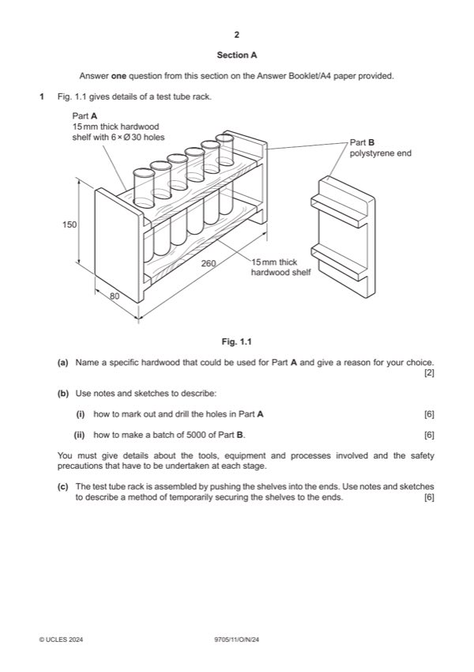

Question 1

Original paper page 2
Part 1(a) — solution
Exemplar answers: 2
Oak [1] is resistant to damage from chemicals [1]
Beech [1] is a close-grained hardwood [1]
Mahogany [1] has an attractive appearance when varnished [1]
0–2
Mark points
- Include the ideas shown in the solution above.
Part 1(b)(i) — solution
Notes and/or sketches show: 6
Description of process of marking out and drilling explained [0-3]
Tools and equipment for marking out e.g. pencil, rule, try square and for
drilling holes e.g. pillar drill, hole saw [0–2]
Safety precaution when drilling e.g. eye protection, work clamped down [0–1]
0–6
Mark points
- Include the ideas shown in the solution above.
Part 1(b)(ii) — solution
Notes and/or sketches show: 6
Description of process [0–3]
Tools and/or equipment and method for producing a batch e.g. injection
moulding, mould, pressure. [0–2]
Safety awareness e.g. demonstrate an understanding of risk assessment,
gloves as a hot product [0–1]
0–6
Mark points
- Include the ideas shown in the solution above.
Part 1(c) — solution
Notes and/or sketches describe: 6
Description of temporary joining method, screw [0–3]
Tools and equipment and process of securing, marking out, drilling
[0–2]
Safety precautions. eye protection, work clamped down [0–1]
0–6
University Press & Assessment 2024 Page 4 of 17
9705/11 Cambridge International AS & A Level – Mark Scheme October/November 2024
Guidance
Mark points
- Include the ideas shown in the solution above.